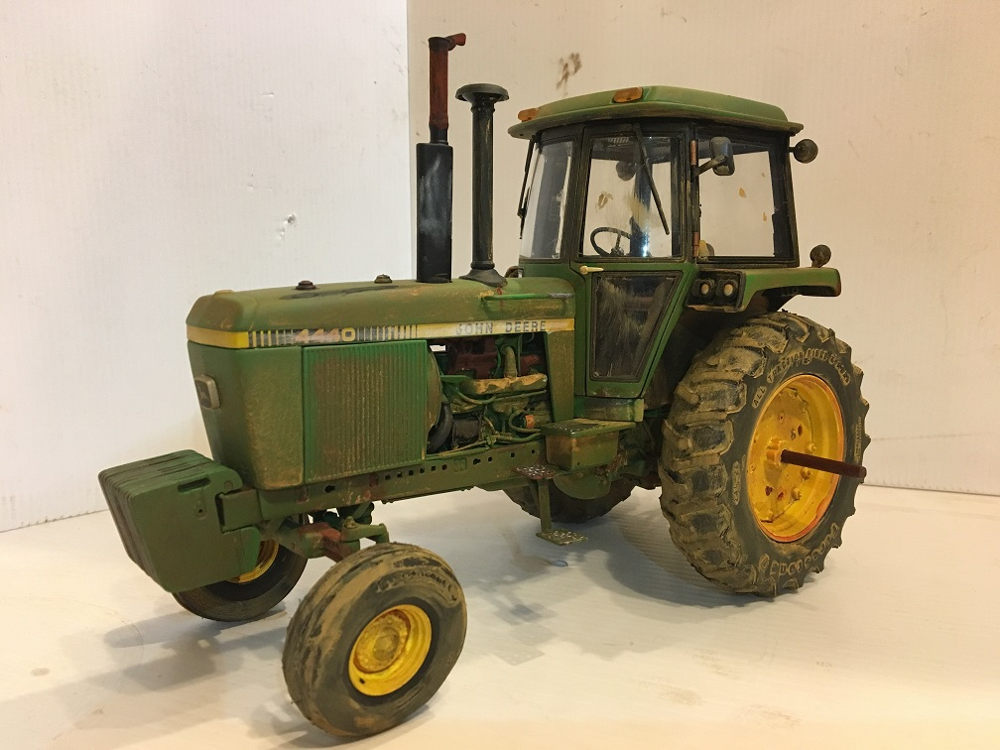
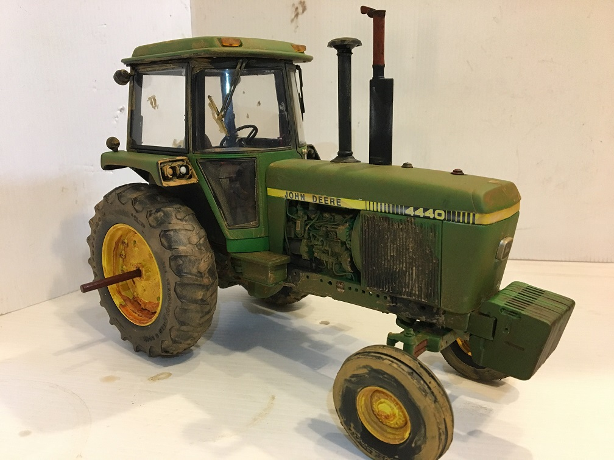
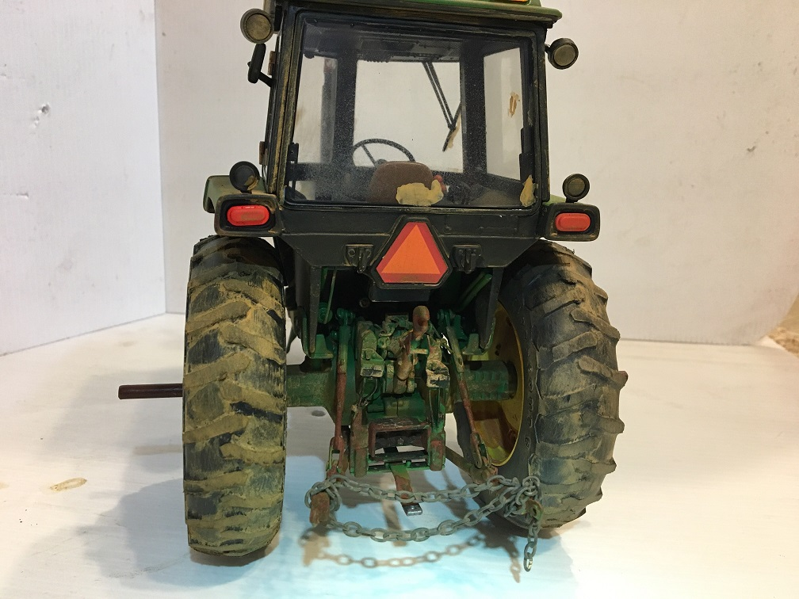
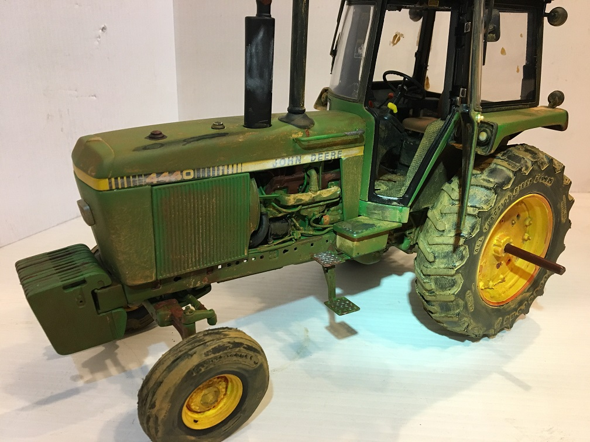
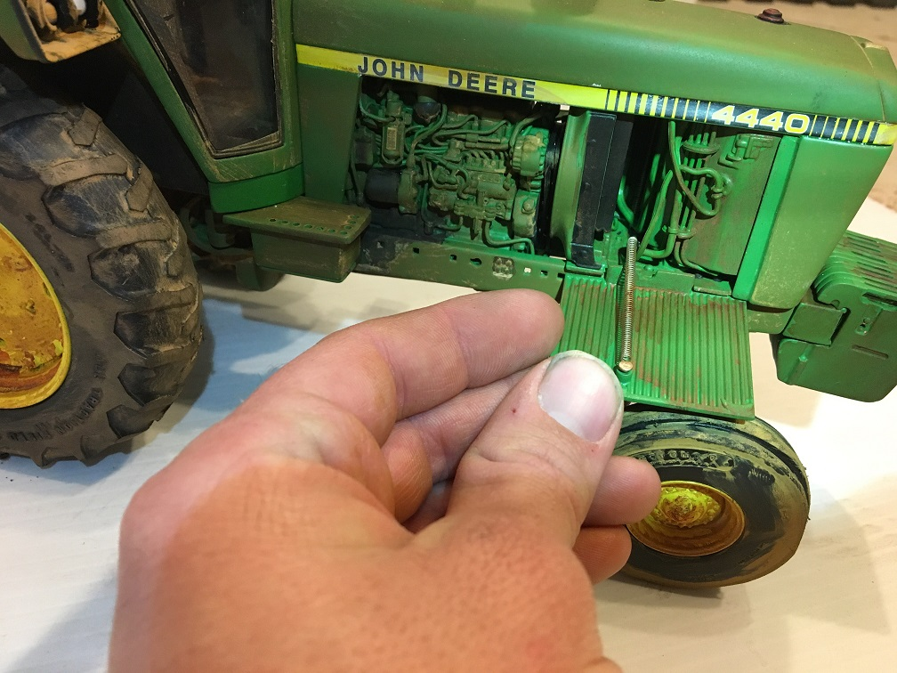
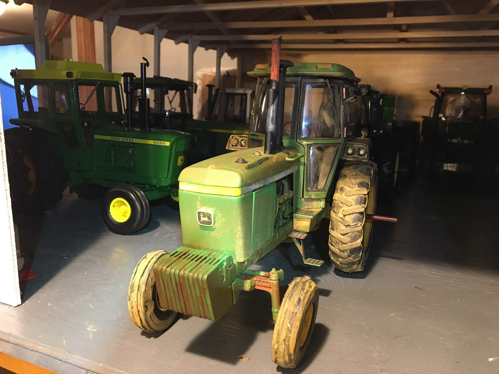

PrecisionClassic.com has partnered with CS Weathering to take the details of the Precision lines to the next level. CS Weathering can tastefully customize your model to give you the most realistic models ever produced. Please contact us at precisionclassic@schweissguth.com for more details!






